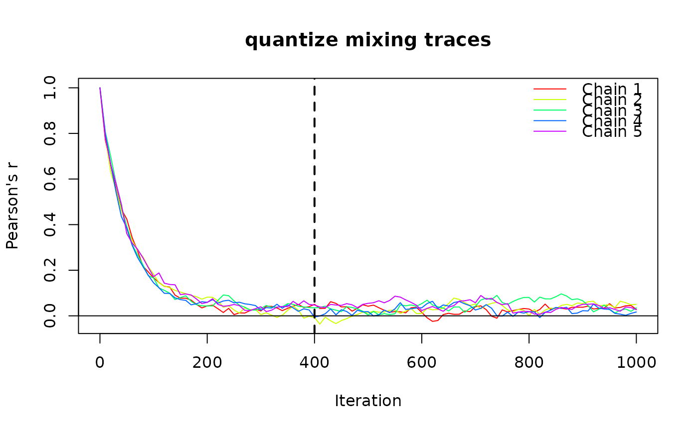
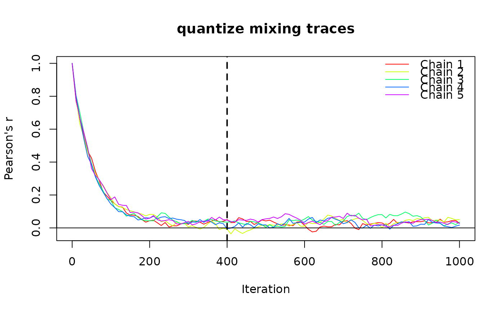

Uses trace diagnostics to estimate how many burn-in iterations are needed for a `nullcat` or `quantize` randomization to reach its apparent stationary distribution, given a dataset and randomization method. Uses a "first pre-tail sign-crossing" rule per chain, then returns the maximum across chains. Can be called on a community matrix or a `cat_trace` object.
Arguments
- trace
Either a
cat_traceobject (as returned bytrace_cat()), or NULL. If NULL, arguments totrace_cat(), includingxand any other relevant parameters must be supplied via...- tail_frac
Fraction of the trace (at the end) used as the tail window (default 0.3).
- plot
If TRUE, plot the trace, with a vertical line at the suggested value.
- ...
Arguments passed to
trace_cat()including arguments it passes to thenullcat()orquantize()function. Ignored iftraceis non-NULL.
Value
An integer of class "nullcat_n_iter" with attributes:
n_iter (numeric or NA), trace (matrix), steps (vector),
tail_mean (per-chain), per_chain (data.frame), converged (logical).
Details
This function uses a “first pre-tail sign-crossing” heuristic to identify burn-in cutoff.
This is a simple variant of standard mean-stability tests used in MCMC convergence
diagnostics (e.g., Heidelberger & Welch 1983; Geweke 1992; Geyer 1992).
It computes the long-run mean based on the "tail window" of the chain, and
detects the first iteration at which the trace statistic crosses this
long-run mean, indicating that the chain has begun to oscillate around its
stationary value. If the chain does not reach the long-run mean before the
start of the tail window, the chain is determined not to have reached stationarity,
and the function returns NA with attribute converged = FALSE.
References
Heidelberger, P. & Welch, P.D. (1983). Simulation run length control in the presence of an initial transient. Operations Research, 31(6): 1109–1144.
Geweke, J. (1992). Evaluating the accuracy of sampling-based approaches to the calculation of posterior moments. In Bayesian Statistics 4, pp. 169–193.
Geyer, C.J. (1992). Practical Markov Chain Monte Carlo. Statistical Science, 7(4): 473–483.
Feller, W. (1968). An Introduction to Probability Theory and Its Applications, Vol. I. Wiley.
Examples
set.seed(1234)
x <- matrix(sample(1:5, 2500, replace = T), 50)
# call `trace_cat`, then pass result to `suggest_n_iter`:
trace <- trace_cat(x = x, fun = "nullcat", n_iter = 1000,
n_chains = 5, method = "curvecat")
suggest_n_iter(trace, tail_frac = 0.3, plot = TRUE)
 #> suggested_n_iter object
#> ───────────────────────
#> Converged: TRUE
#> Suggested n iterations: 420
# alternatively, supply `trace_cat` arguments directly to `suggest_n_iter`:
x <- matrix(runif(2500), 50)
n_iter <- suggest_n_iter(
x = x, n_chains = 5, n_iter = 1000, tail_frac = 0.3,
fun = "quantize", n_strata = 4, fixed = "stratum",
method = "curvecat", plot = T)

#> suggested_n_iter object
#> ───────────────────────
#> Converged: TRUE
#> Suggested n iterations: 420
# alternatively, supply `trace_cat` arguments directly to `suggest_n_iter`:
x <- matrix(runif(2500), 50)
n_iter <- suggest_n_iter(
x = x, n_chains = 5, n_iter = 1000, tail_frac = 0.3,
fun = "quantize", n_strata = 4, fixed = "stratum",
method = "curvecat", plot = T)
